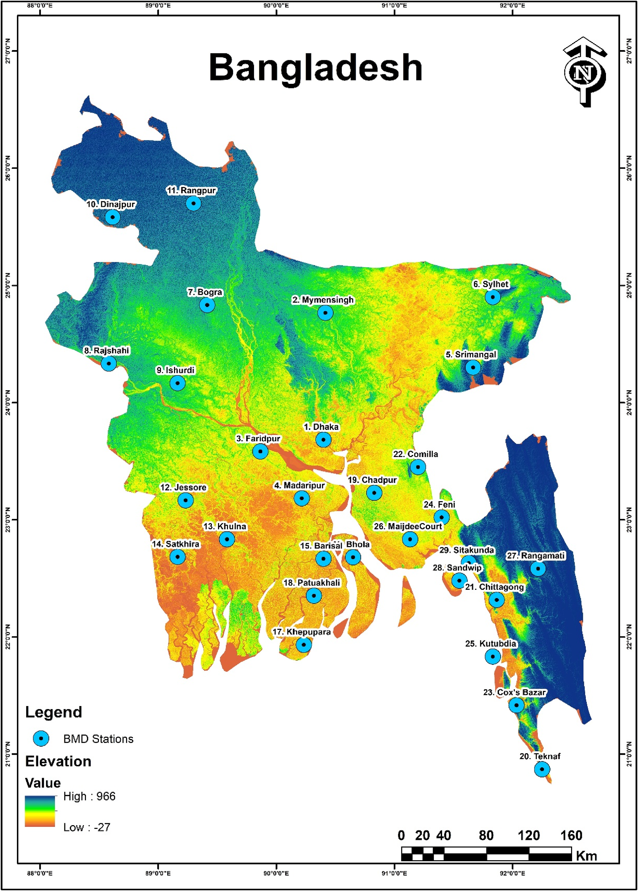
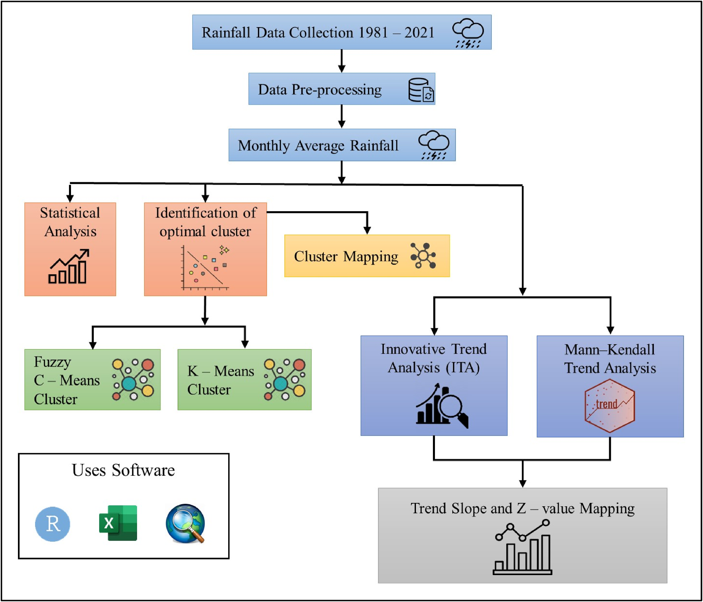
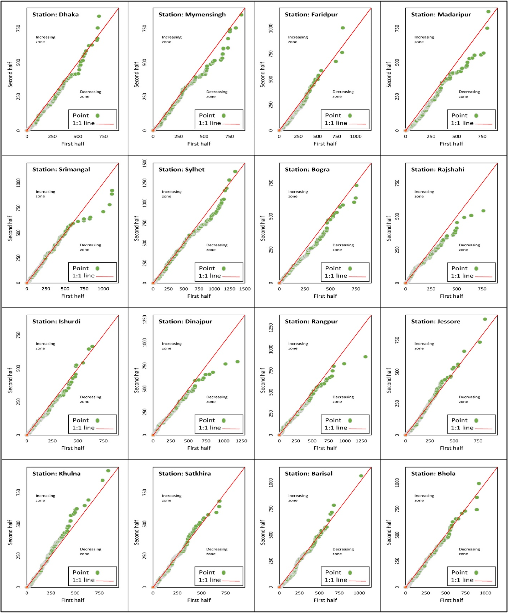
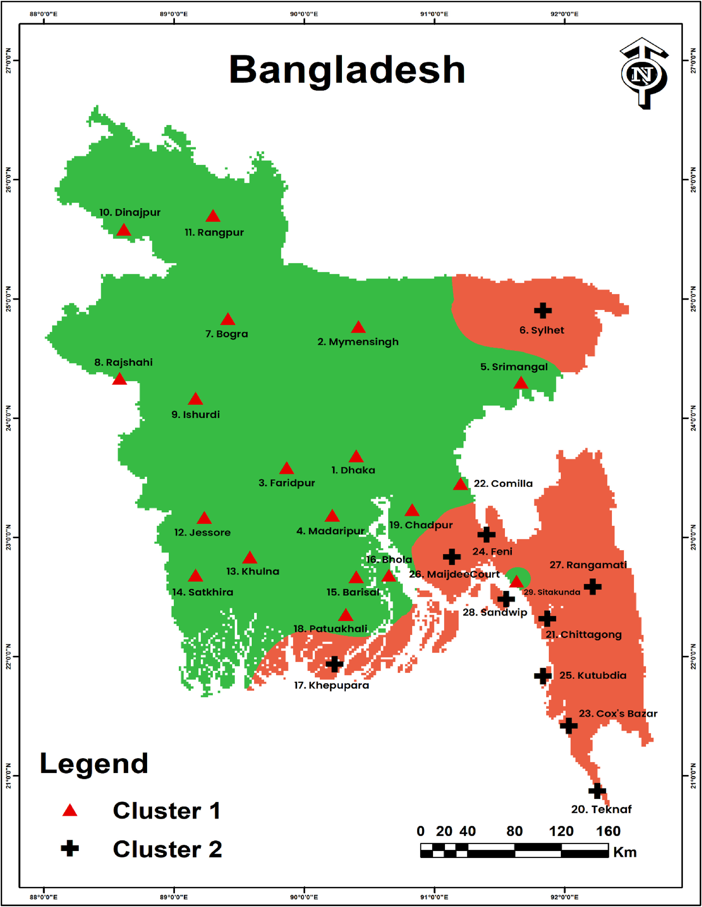
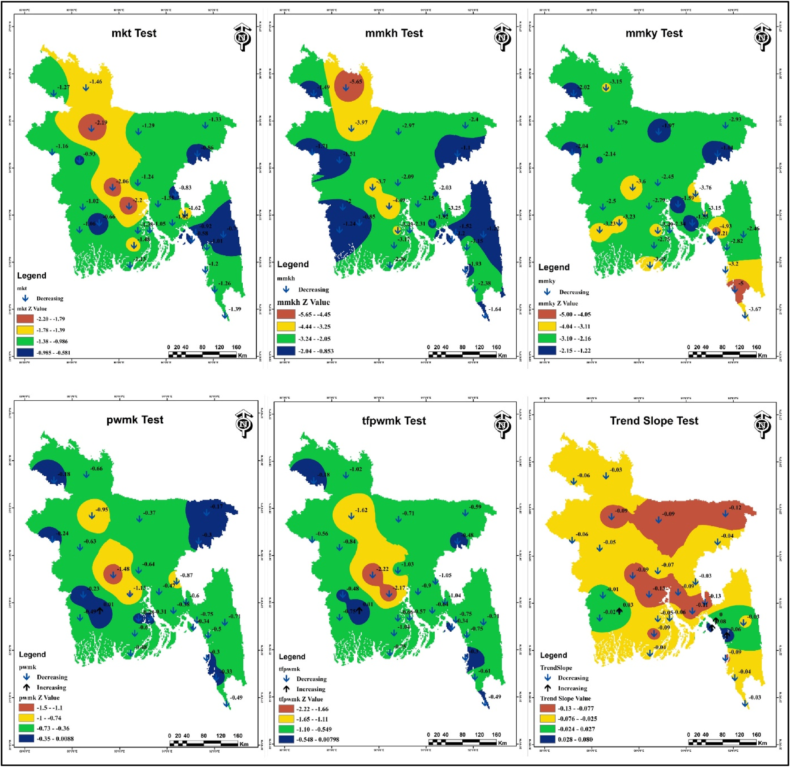

A long-term rainfall data analysis (1981–2021) investigating precipitation patterns across 29 BMD stations using Fuzzy C-Means clustering, Innovative Trend Analysis, and Mann-Kendall tests.
A six-stage analytical pipeline combining clustering algorithms with advanced trend analysis techniques.
40-year rainfall dataset (1981–2021) from 29 BMD meteorological stations. KNN imputation for missing data. Boxplot-based outlier detection.
K-means and Fuzzy C-Means (FCM) clustering to identify homogeneous rainfall regions. Silhouette width validation (peak 0.73 for k=2).
Innovative Trend Analysis computed using R packages. Monthly precipitation trends identified as monotonic/non-monotonic, increasing/decreasing.
Original MK, Modified MK (MMKY), Pre-Whitened MK (PWMK), and Trend-Free Pre-Whitened MK (TFPW-MK) applied for trend significance.
Non-parametric estimation of trend magnitude. Positive values indicate increasing, negative values indicate decreasing rainfall trends.
IDW interpolation in ArcGIS 10.8 for spatial mapping of rainfall patterns across Bangladesh.
Bangladesh is a South Asian country with a tropical monsoon climate that is highly vulnerable to rainfall variability.
Statistical analysis of precipitation patterns and spatial clustering across Bangladesh.





Critical insights from 40 years of rainfall data across Bangladesh's meteorological network.
Both K-means and FCM successfully identified two homogeneous clusters. Cluster 1 (65.51%, 19 stations) covers northwest, southwest, and central regions. Cluster 2 (34.48%, 10 stations) covers northeast, southeast, and eastern hills.
MK tests showed predominantly negative trends across Bangladesh. 25 of 29 stations showed significant decreasing rainfall from 1981–2021. Only Khulna, Chittagong, Sandwip, and Sitakunda showed positive trends.
44.83% of stations showed non-monotonic decrease, 37.93% showed non-monotonic increase. Only 17.24% showed consistent monotonic decrease. No stations showed monotonic increase.
Madaripur, Feni, and MaijdeeCourt showed the steepest rainfall decline. Trend indicator ranged from 0.72 to −1.80 across all stations.
Silhouette analysis yielded peak value of 0.73 for two clusters, classified as "strong" clustering. Both K-means and FCM converged on identical regional boundaries.
Cluster 2 coastal stations (Cox's Bazar, Kutubdia, Sandwip) showed non-monotonic decreasing trends, potentially linked to sea surface temperature changes and atmospheric dynamics.
Published in Quaternary Science Advances, Elsevier.
This study investigated rainfall patterns across 29 Bangladesh Meteorological Department (BMD) stations over a 40-year period (1981–2021). Using Fuzzy C-Means and K-means clustering algorithms, two homogeneous rainfall regions were identified with a strong silhouette score of 0.73. Innovative Trend Analysis (ITA) and multiple variants of the Mann-Kendall test were applied to characterize monotonic and non-monotonic precipitation trends. The results revealed predominantly declining rainfall across Bangladesh, with 25 of 29 stations showing significant negative trends. Spatial interpolation using IDW in ArcGIS provided detailed mapping of these patterns, contributing to improved understanding of regional climate variability in this highly vulnerable South Asian nation.